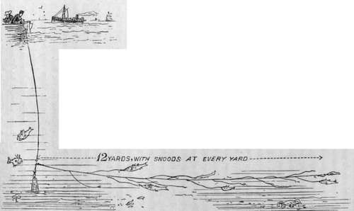
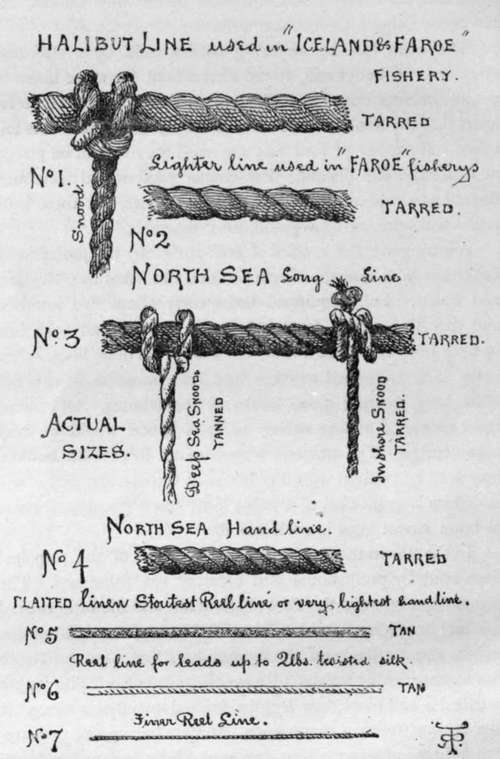

Sea Fishing From Yachts And Large Fishing Boats. Part 5
Description
This section is from the book "Sea Fishing", by John Bickerdyke. Also available from Amazon: Sea Fishing.
Sea Fishing From Yachts And Large Fishing Boats. Part 5
There are three kinds of long lines. The drift-trot is laid along the bottom, and is weighted at one end. It is only of advantage where the tide runs strongly. Another is also laid on the bottom, but is weighted at both ends, and, if very long, at intervals ; and the third, called a floating trot and used for bass and other surface-swimming fish, is buoyed with corks so as to keep it near the surface.
How the unleaded end of the drift-trot is kept extended by the current is shown in the illustration on the next page. The lead should weigh from three to six pounds, according to the tide. In a very strong tidal current a grapnel or small anchor may with advantage be substituted for the lead.
The size of the hooks, of which there may be twenty or more on the drift or other trot, must depend on the fish which are about; if these happen to be inconsiderable whiting and flat fish, obviously a small hook must be used. If the fish vary from a few ounces to twenty pounds or so, then larger hooks are necessary. A capital plan is to use hooks of two sizes : large ones with herring, mackerel, squid, pilchard, or other bait, for big-mouthed fish ; and smaller ones, baited with lugworms or mussels, for flat and other small-mouthed fish.
It is a good plan, indeed almost necessary, to have a very large swivel between the lead and the portion of line bearing the hooks. Such a one, for instance, as that illustrated in connection with the ocean tackle in Chapter IX. The more expensive lines, made for amateurs, are fitted with a swivel on each snooding. If a trot is laid near rocks, and large congers are likely to visit the hooks, it is most certainly advisable to have a heavy weight at both ends, and to have a swivel on each snood. The trot then becomes a paradoxical piece of tackle—a short long-line. Indeed, long lines are frequently called trots, and, as I have said above, also bulters and spillers, the last name being a Devonshire term.
DRIFT-TROT SHOWN IN USE.
The main line before being used should be wetted and stretched, or, better still, towed after a boat for some hours to get all the kink out of it. The snoods should be placed so far apart that the hooks will not and cannot possibly foul one another. If snoods of four feet are used they should be placed at least nine feet distant. For conger professional fishermen do not as a rule use swivels on their long lines, but these little refinements are, as I have said, most desirable.
Amazing are the lengths of line carried by the professional fishermen who visit the North Sea and the fisheries of Iceland and Faroe. Fully equipped boats carry about two hundred and fifty lines, each forty fathoms in length, and each line bearing from twenty to twenty-six hooks. These lines, when being laid, are joined together into one immense line several miles long, bearing 5,000 hooks or thereabouts. Of course, the expense of adding swivels to each snood would be very considerable. The amateur, who does not fish for the market, may well be content with fifty hooks at the outside, and it will save him a great deal of trouble if he has a phosphor-bronze or brass swivel fixed in each snood.
In the illustration is given the actual sizes of the principal lines used by professional and amateur sea fishermen. The comparison between the Faroe halibut line and the little twisted silk reel line is remarkable. Forty fathoms of the halibut line weighs about 5 lbs., and the lightest long line used for North Sea inshore fishing weighs 3 lbs. per forty fathoms. This length is called a half-piece, two lengths knitted together a piece, six pieces constituting a dozen lines. In from twenty-five to thirty-five fathoms of water a boat can work about twenty-five dozen lines each day, but on the Faroe bank, in from 100 to 120 fathoms, not more than fifteen or sixteen dozen lines a day can be satisfactorily attended to. The heavy halibut lines are not raised by hand, but by patent haulers which are fixed on the rail and are worked by a small winch.
FISHING LINES COMPARED (actual SIZE).
As a part of the long-line gear each codman carries ten small and two larger (captain) buoys. The anchors which hold the line weigh about 10 lbs., and there is one to each buoy. The North Sea cod baits are whelks, lampreys, and squid. At Faroe and Iceland herrings and sometimes young coalfish are used for the long lines, and whelks on the hand lines. Herrings and sillocks (coalfish) are the principal baits used in the Faroe fishery for halibut.
While on this subject I am tempted to say a word concerning the North Sea fishermen, of their perils, hardships and bravery. To do so would be rather beyond the scope of this work, so I will only say here that those who sympathise with these fine fellows cannot give expression to their feeling in a more practical way than by subscribing to the Mission to North Sea Fishermen. The Mission not only attends to the spiritual wants of the men, but gives them medical attendance and performs many friendly offices for them.
Whelks are recommended among the best baits for long lines because of their toughness and the difficulty with which they are removed from the hook by crabs, cuttle-fish, and small fry.
There is a particular knot for fastening snoods to a long line which I learnt from an old Thames poacher who had used it for his eel lines. An amateur is not very handy at unhooking fish, and as when taking in a line in a breeze it is often necessary to free the hooks from the fish as fast as the line is pulled in, I recommend this knot to those clumsy of hand. By merely pulling the short end of the snood the knot falls to pieces, and the fish, hook in mouth, can be instantly dropped in the bottom of the boat. The hook can be extracted at leisure, and the snoods, which on our amateur lines are not very numerous, are soon retied on to the main line.
Continue to:
- prev: Sea Fishing From Yachts And Large Fishing Boats. Part 4
- Table of Contents
- next: Sea Fishing From Yachts And Large Fishing Boats. Part 6
Tags
fishing, hooks, bait, fishermen, spanish mackerel, mackerel fishing